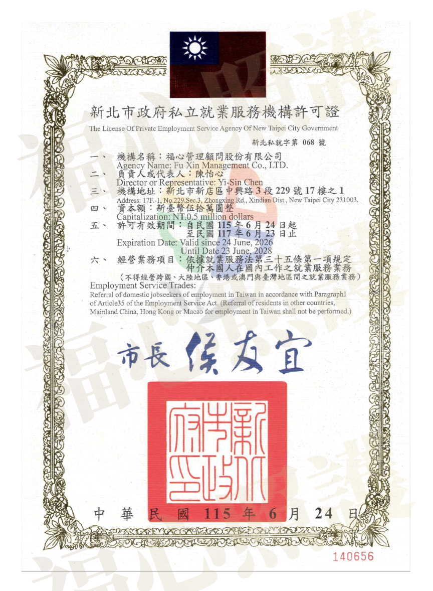

當長輩突然住院，全家人往往一陣手忙腳亂，只要打聽到病房現場「有人明天可以來顧」，通常就立刻付錢簽約，完全無暇細查照服員的身分。然而，台灣醫療與照護人力市場中，隱藏著許多未經政府許可、私下媒介人力的非正規廠商與非法個體戶。
許多家屬常有一個誤解：「只要對方拿得出蓋有公司章的收據，應該就是合法機構吧？」這在法規上其實是很大的盲點。今天福心照護團隊就教您如何在簽約前，透過簡單的官方管道查驗仲介的真實資格，保護家人也保護自己的權益。
一、 核心法規：有「公司登記」不等於可以「派遣看護」
這是最常見的法律漏洞。很多地下不肖業者會去經濟部申請一個「XX管理顧問公司」或「XX企業社」的工商登記，並拿這張核准函向家屬宣稱自己合法。但根據中華民國就業服務法規定，凡是涉及「媒介、派遣台籍照顧服務員（看護）或外籍移工」之業務，屬於政府嚴格管制的特許行業，機構必須額外取得勞動部或地方政府核發的「私立就業服務機構許可證」才能合法營業。
如果一家仲介只有一般工商登記，卻拿不出許可證字號，在法規上依然屬於非法媒介。一旦他們派來的短期人力出現竊盜、不當照顧，甚至是非法外籍黑工（逃逸移工），這類地下業者往往直接將聯絡方式封鎖便人間蒸發，家屬不僅求償無門，還必須承擔雇用非法外籍勞工的連帶法律責任。
二、 正確查驗合法看護廠商的 3 個步驟
為了確保家庭權益與病人安全，建議家屬在尋找大醫院陪病看護時，堅持執行以下查驗流程：
步驟 1：要求出示「私立就業服務機構許可證」
正規合法的機構，會主動在官方網站或合約上公開許可證字號（如福心許可證字號：新北私就字第 068 號）。若對方推託、或宣稱通常不會開立發票收據，請務必提高警覺。
步驟 2：確認廠商是否能主動出示實體「許可證」
雖然勞動部設有「私立就業服務機構查詢系統」，但官方網站往往因為系統維護延遲或不穩定，導致最新年度核發的合法廠商一時間查不到最新資料。因此，最保險且最直接的驗證方式，是直接要求廠商提供由地方政府核發的實體許可證照片。
以福心照護為例，我們在案家諮詢時，皆能隨時出示由新北市政府核發、完全合規的「私立就業服務機構許可證」（新北私就字第 068 號）。正牌機構經得起檢驗，若對方百般推託拿不出實體證照，即使網路話術再漂亮，也千萬不可雇用。

福心官方實體許可證：新北私就字第 068 號
步驟 3：現場核對照服員雙證件
當看護夥伴抵達病房或家中時，合法機構的行政督導會配合出示看護夥伴的「中華民國國民身分證 animate」與政府核發的「照顧服務員訓練結業證書（或照服員單一級技術士證照）」，確保來的人員具備專業資格，且完全無黑工疑慮。
三、 選擇福心：政府特許立案，值得信賴的法人規格
福心管理顧問股份有限公司作為大雙北地區深耕專業的指標廠商，我們不僅在經濟部正式登記（統一編號：62179070），更是榮獲新北市政府核發「私立就業服務機構許可證」（新北私就字第 068 號）的特許正規廠商。
因為我們百分之百合法合規、流程受政府嚴格監督，我們具備完整的對接法人（公司對公司）配合能力，能開立正式發票、提供定價契約化保障，這也是為什麼許多中大型企業指名福心作為「企業員工家屬照護特約廠商」的核心原因。
把照護的安全防線交給合法的福心，把相聚的平靜留給家人。